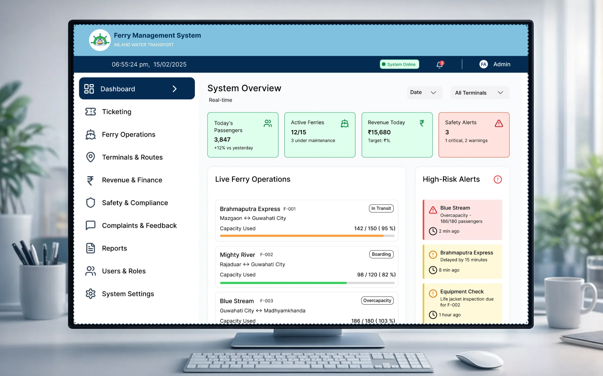
01
Ferry Management System
Product · UI/UX
Real-time ferry operations and management dashboard designed for inland water transport.
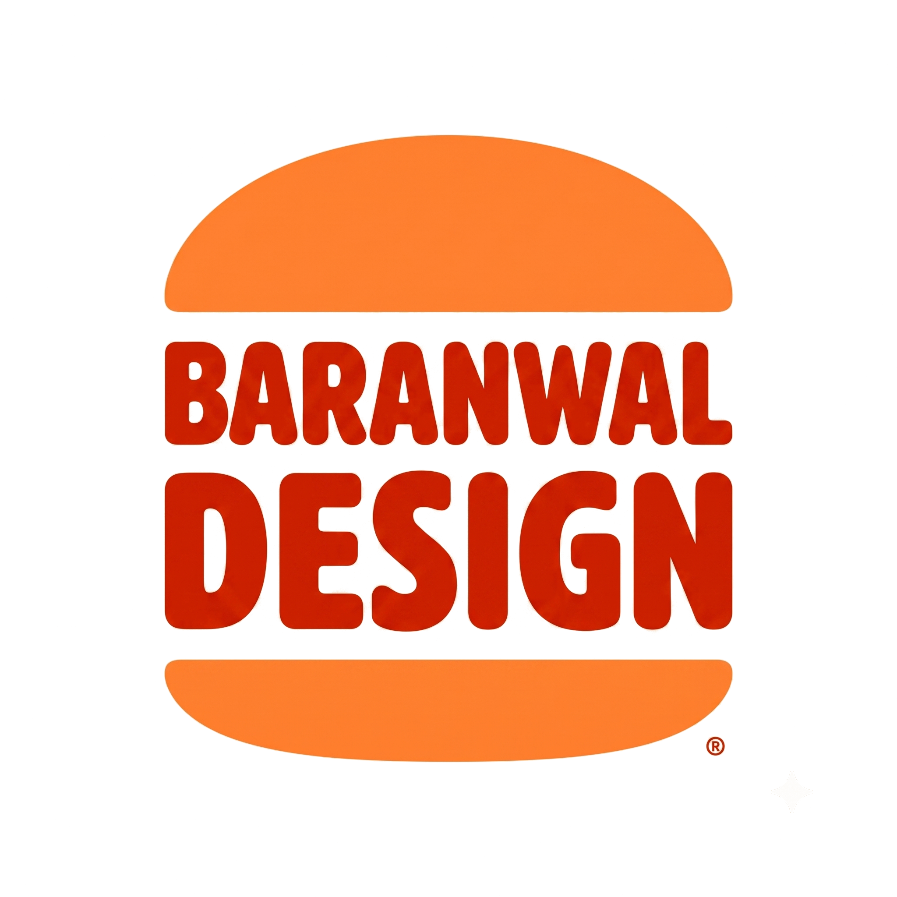
PRODUCT DESIGNER · UI/UX · SYSTEMS
I’m Sumit Baranwal, a product designer combining UX thinking, visual design and engineering to turn complex problems into simple experiences.
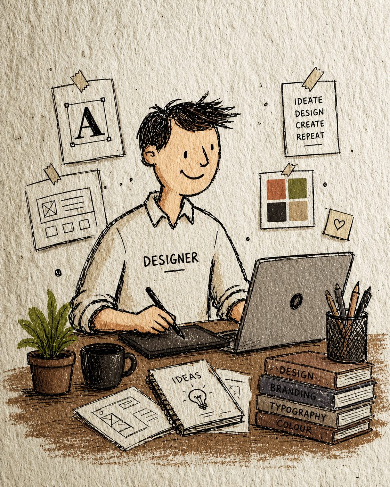

Product · UI/UX
Real-time ferry operations and management dashboard designed for inland water transport.
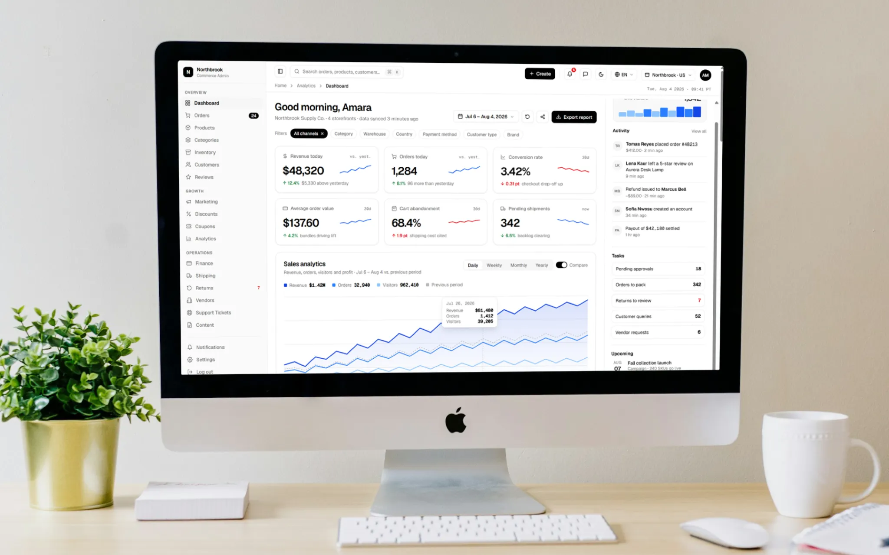
Product · UI/UX
Commerce operations dashboard for revenue, orders, inventory, customers and analytics.
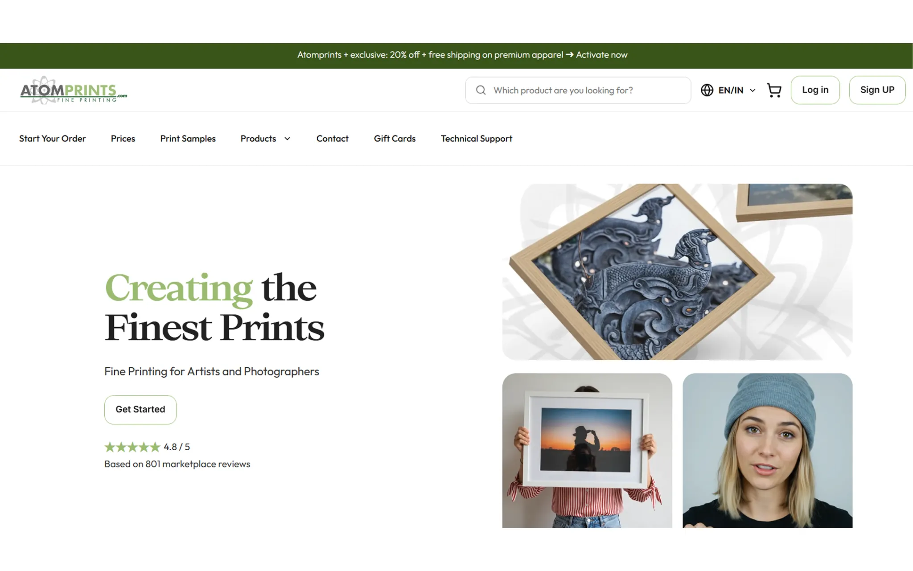
Web · Product Design
E-commerce experience for fine-art printing, helping artists and photographers discover and order prints.
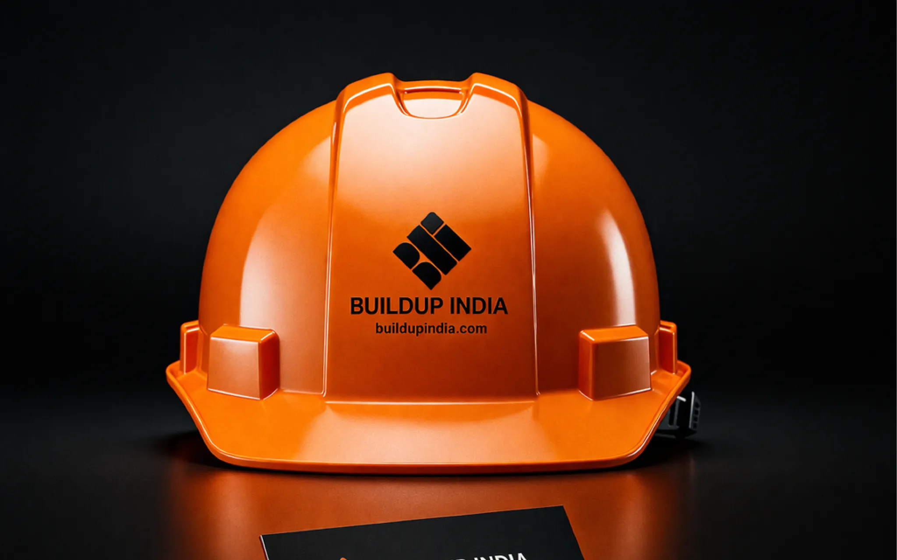
Brand · Visual Design
Brand and visual communication work for Buildup India, including product-facing identity applications.
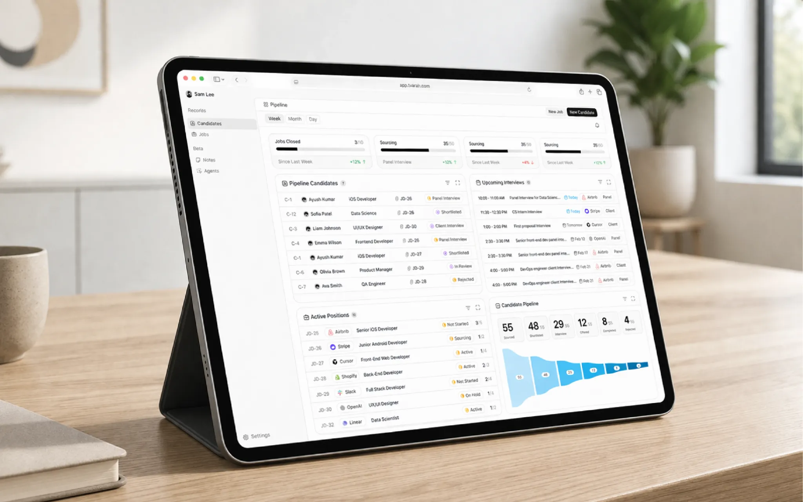
Product · UI/UX
Recruitment operations dashboard for candidate pipelines, interviews, active positions and hiring workflows.

UI/UX Design
Interactive lifestyle product concept focused on turning small habits into engaging daily actions.
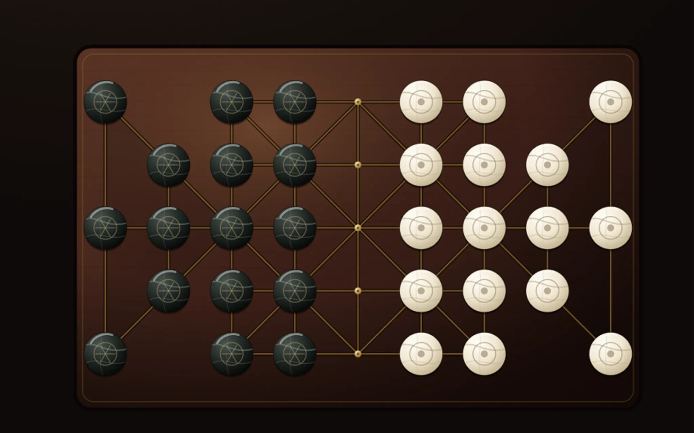
Game · Interaction Design
Digital interpretation of the traditional strategy game with a connected board and player interactions.
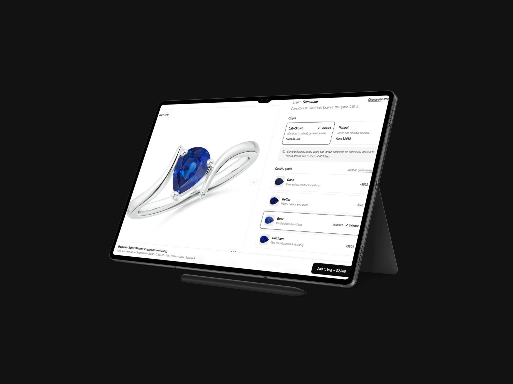
Product · UI/UX
A premium product-detail experience focused on gemstone selection, quality comparison and confident purchase decisions.
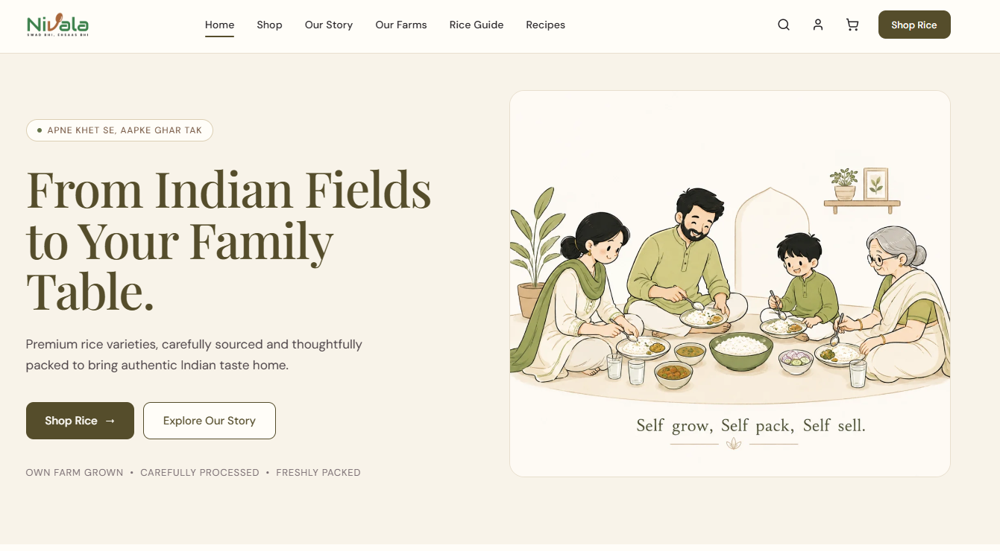
Brand · Web Design
Food brand website experience connecting farm-grown products, storytelling and a warm family-first visual identity.
My design journey has always been about observing, making and improving — from early curiosity and sketching to designing digital products with people at the centre.
Today, I work across product strategy, UX, UI and design systems, combining my M.Des in Design with an engineering foundation to turn complex problems into clear, useful experiences.
I enjoy moving between research, interaction, visual craft and collaboration — shaping ideas into thoughtful, build-ready products.
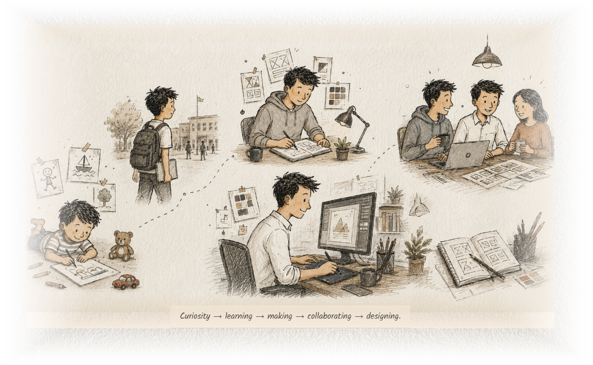
3+ years of professional design experience across digital products and interfaces.
Design research, systems thinking, visual communication and interaction design.
Engineering foundation supporting structured problem solving and cross-functional delivery.
Frame the problem, users, constraints and success criteria.
Generate directions, flows and interaction concepts.
Build a clear visual system and high-fidelity experience.
Test, iterate and collaborate toward a build-ready solution.